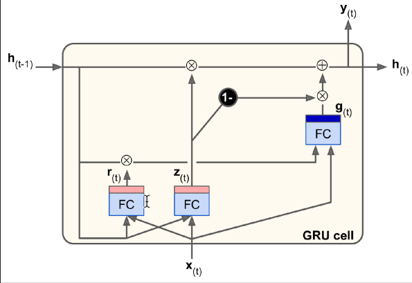
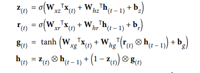

A GRU is not a memory vault. It is a controlled update rule that decides how much of the previous state should survive the arrival of new information.
01 — The problem
Traditional recurrence keeps overwriting itself.
As a simple RNN reads a long sequence, its hidden state changes at every token. Earlier information can fade into the updates that follow. The issue is not that an RNN has no memory; it is that the memory has no explicit control over when to preserve or replace a signal.

02 — Inside the gates
Two small decisions shape the state.
The update gate determines how much of the previous state remains. The reset gate controls how much prior information is considered while making a candidate state. Together they allow a GRU to keep a useful context when needed and refresh it when the sequence changes direction.
Keep or replace
Balances the prior state against the candidate information.
Look back
Decides how much history contributes to the next candidate.

03 — GRU versus LSTM
Simpler is a trade-off, not a defect.
LSTMs separate cell state from hidden state and use more gates. GRUs combine the ideas into a smaller design. That can mean fewer parameters and easier training while still handling many long-dependency problems well. The right choice depends on sequence length, data, latency, and the empirical result.
04 — Choosing
Start from the constraint.
Choose a GRU when a compact recurrent model is useful and a simpler gate structure fits the problem. Choose an LSTM when its additional control helps the observed behavior. Choose attention-based models when direct, parallel access to broad context matters most. Architecture names are less useful than the constraint they answer.
The original deck walks through the gates, their equations, the comparison with LSTMs, and selection guidance.
Open PDF